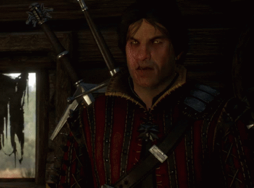

Эскель
 Эскель (ориг. Eskel) — второстепенный персонаж литературной саги, а также игр Ведьмак и Ведьмак 3: Дикая Охота, ведьмак из Школы Волка и друг детства Геральта из Ривии. Является опытным и искусный охотником на чудовищ, ничем не уступающим Геральту, однако он не снискал такую славу, как его коллега по цеху. Кроме того, они с Белым Волком одного возраста и вместе прошли Испытание Травами, жестокий отбор и обучение, после чего стали ведьмаками.